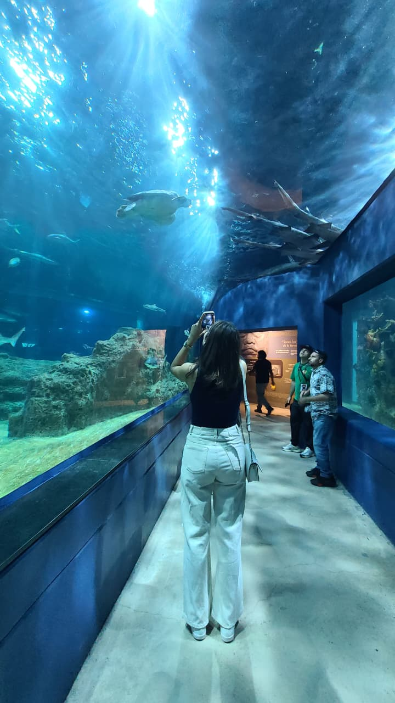
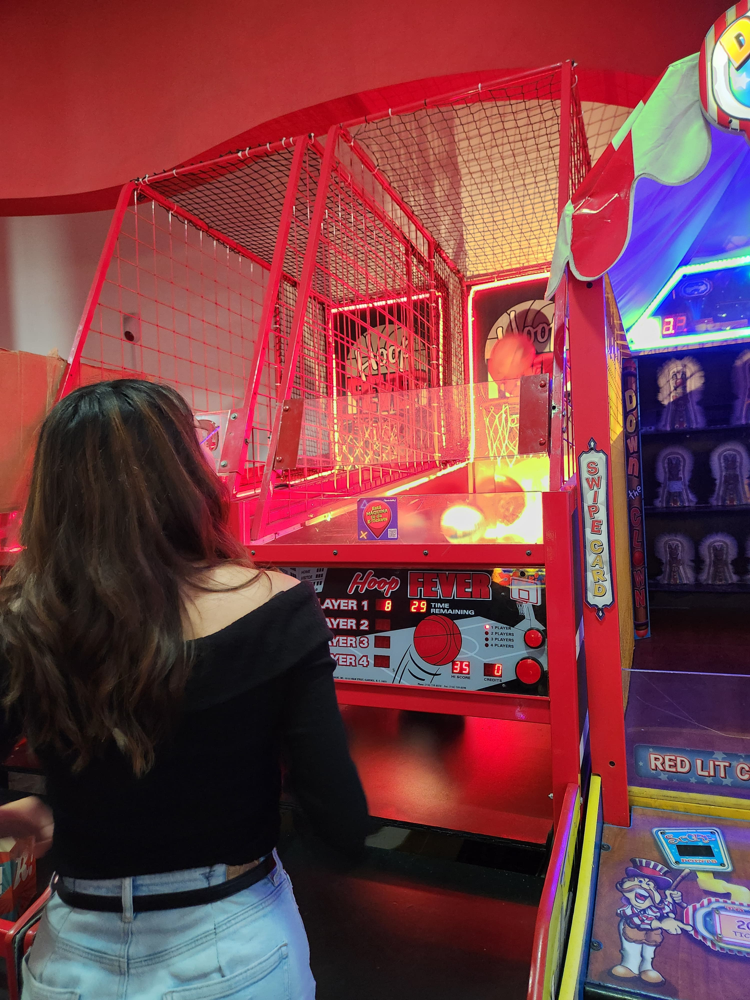
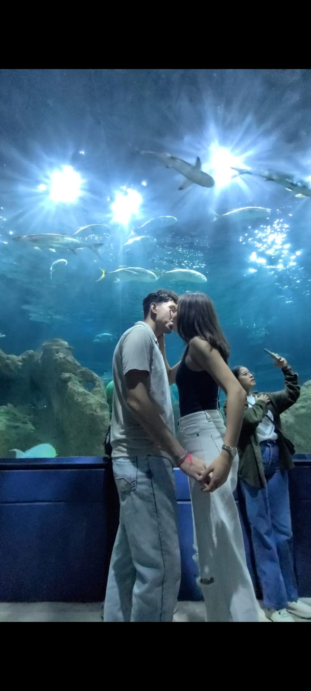
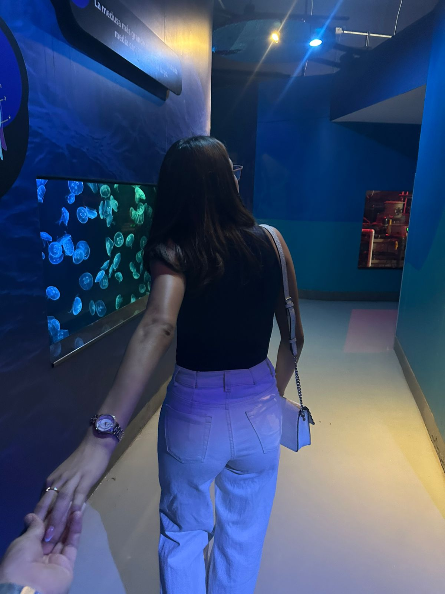
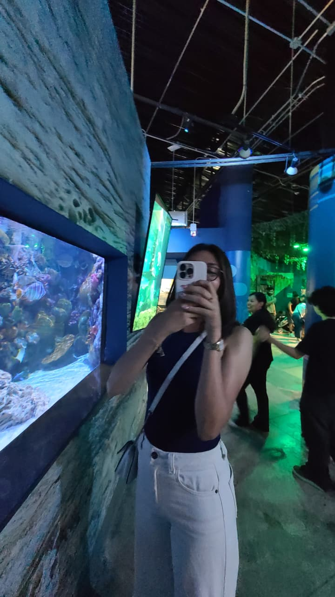
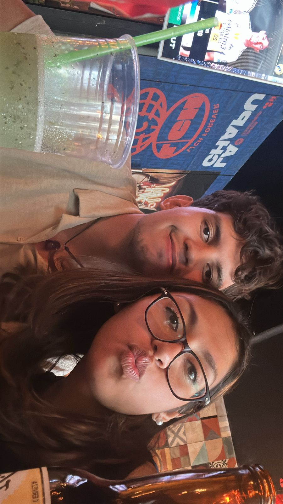
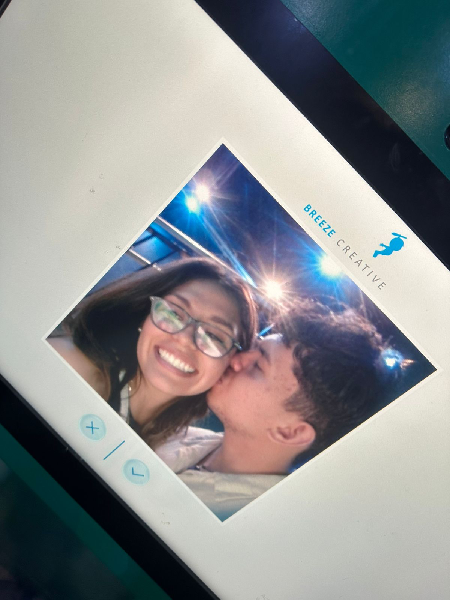
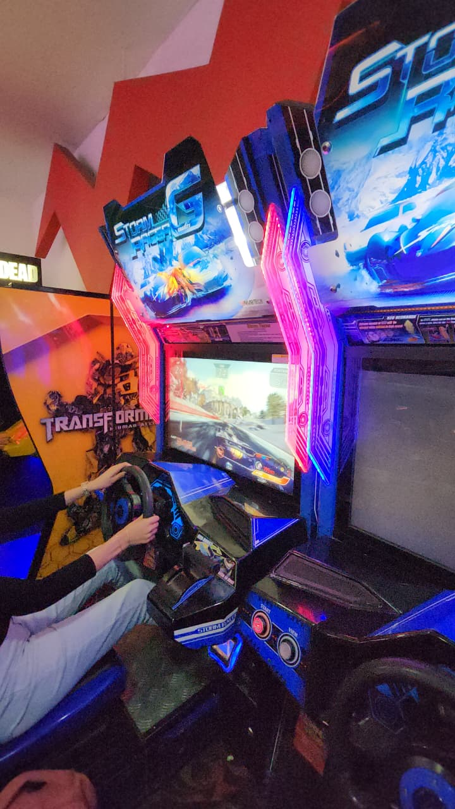
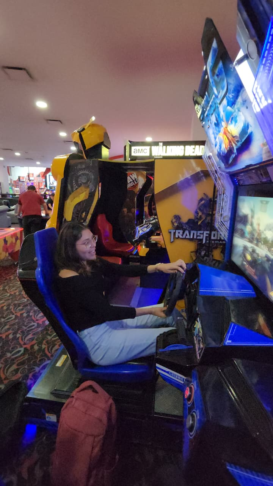

Welcome Jaqueline ❤️


Elige un sobre para leer, mi niña hermosa.

DAY ONE
1/07/2025
El dia mas hermoso de mi vida, pues te pedi te volvieras parte de mi vida.

La Barranca
22/07/2025
Aqui entendi que haria todo por ti, hasta por encima de mi mismo.

Tu Primer Ramo
13/06/2025
El Primer Viernes 13

Acuario date
1/07/2025
De las mejores citas.

Primera cita no cita.
8/06/2025
Donde me dije me voy a enamorar perdidamente
Si cierro los ojos, todavía puedo sentir la adrenalina de esa mañana. Recuerdo el caos de correr buscando esos Legos de F1 que nunca aparecieron, la decisión de armar yo mismo esos llaveros con mis manos para darte algo único, y las prisas en el tren para intentar ganarle al tiempo.
Todavía me sonrío al recordar que terminé bañándome con un garrafón de agua en casa de mi abuela porque no tenía mis llaves ni agua en mi colonia JAJAJA. Todo parecía ir en contra, pero nada de ese desorden importaba, porque al final del camino estabas tú.
Incluso en el cine, cuando el miedo me hizo dudar, decidí que tú valías cualquier riesgo. Por eso, cuando rodeé el parque a escondidas, mientras te dije sigue grabando, y llegar con mis zapatos llenos de lodo JAJAJJA, te hice la pregunta, el mundo entero se quedó en silencio.
Al decirte "te amo" y escuchar por primera vez tu "te amo" de vuelta mientras me mirabas a los ojos, sentí una paz que nunca había conocido. En ese segundo, en medio de ese parque, me hice una promesa: "Es ella. Siempre será ella".
Gracias por elegirme y por convertir ese caos en la historia más bonita de mi vida.
Con todo mi amor, Alejandro


Mi Junnice Hermosa
Ese día en la Barranca de Huentitán es uno que jamás voy a olvidar. Lo que empezó como una expedición de "runners" (o al menos eso intentamos, jajaja) terminó siendo el momento exacto en el que me di cuenta de la inmensidad de lo que siento por ti.
Verte tan agotada, cuando te deshidrataste, y sintiendo que casi te desmayabas, me llenó de muchísima angustia. Pero al mismo tiempo, despertó en mí un instinto protector que ni yo sabía que tenía. Cuando vi a mi princesa con sed y mareada, supe sin dudarlo que haría cualquier cosa por verte bien.
Si tenía que volver a subir corriendo por agua, lo iba a hacer mil veces si era necesario. Aquel día, entre el calor y el cansancio extremo, entendí que mi amor por ti va más allá de los momentos fáciles. Significa cuidarte cuando te faltan las fuerzas, cargarte de caballito si es necesario para cruzar el camino, y ponerte a ti incluso por encima de mí mismo.
Gracias por esa aventura y por dejarme cuidarte. No importa qué tan empinada sea la subida en esta vida, siempre voy a estar ahí para darte agua, abrazarte y asegurarme de que lleguemos juntos a la cima.
Te amo infinitamente, Alejandro


Mi hermosa niña,
Debes poner primero la cancion que aparece en la foto Jiji ahora si te dejo con la carta pero si hazlo porfi
Dicen que los viernes 13 son de mala suerte, pero desde que te conocí, mi suerte cambió por completo. Ese 13 de junio de 2025 quería hacer algo verdaderamente especial para ti.
Entregarte ese Nuestro primer ramo fue precioso, Ver tu sonrisa al recibir esas flores es algo que se quedó grabado en mi memoria para siempre. Fue un pequeño detalle, pero cargado de todo el sentimiento que ya estaba creciendo en mí para demostrarte lo mucho que me importas y lo especial que eres.
Estaba planeando este momento por mucho tiempo, desde nuestra primer cita que lo planeaba, y es que como me arrepiento de esa primer cita no regalarte flores, pero despues de todo me alegra que este NOSOTROS funcionara.
Espero poder regalarte muchísimos ramos más, en muchos más viernes 13, y seguir llenando cada uno de tus días de colores, amor y muchísima alegría.
Te amo con todo mi corazón, Alejandro

JAJJAJAJ, todavia recuerdo esa cita como odio haber perdido todas las fotos y videos de este dia, si te recuerdo tu planeaste esta cita y me encanto..
Amor, hay tantas cosas de este dia, pero tu carita de felcidad viendo las nutrias es lo mas hermoso, cada que la recuerdo me da un sentir muy bonito ando buscando un video espero encontrarlo.
Niña nmchs estuvimos por todos lados y aun que no te gustan entraste conmigo a ver los pajaros, y es vdd aun nos falta pelearnos en un gotcha que ese dia no se pudo. "te amo"...
Y bueno sin mas que decir, gracias por esos momentos tan hermosos, gracias por tanto vida mia, espero poder seguirte haciendo feliz
Con todo mi amor, Alejandro





Si bueno esta es nuestra primer cita no cita y buenooooooo pasaron muchas cosas, expresar todo en esta carta estaria complicado y un poco tardado, pero trata de desglosar las cosas mas importantes
Recuerdo los nervios de verte, sabia que no era una simple salida de amigos, algo de mi decia que tenia que llegar con flores para ti, y aun me arrepiento de no hacerlo, aun que esperar hasta ese viernes 13 siento fue mas iconico y bonito
Pero si aglo me queda es lo hermosa que te veias y aun que siempre digo que no tenia miedo de salir contigo si me daba miedo, pero hay que ser valientes y trate de serlo, me arme de valor y terminando la cita ambos sentimos esa chispa
Es algo dificil de explicar decir que pasamos de amigos a novios en un dia, y bueno asi fue, pues ambos nos sentimos amados, y en toda la salida para nosotros fue otro nivel de conexion.
llegano al final se ese dia antes de ese beso, recuerdo decirte no quiero algo pasajero, y despues del beso te pregunte "¿tu que quieres?, ¿algo bien, algo casual?, y me respondiste algo bien contigo, acordamos ir lento y bueenoooo
A las semanas ya queria pedirte ser mi novia que cosas JAJAJJA, pero bueno ese dia recuerdo en mi mente sonaba una cancion y me daba miedo, me daba miedo enamorarme y que saliera mal de nuevo, eso me aterraba, y en mi mente solo sonaba un "Estoy enamorado"
Como dije esto seria largo hay muchas cosas por decir y no alcanzo a poner todo en una sola carta pero bueno, te escribire mas sobre este dia Te amo niña
De: El amor de tu vida, Alejandro

